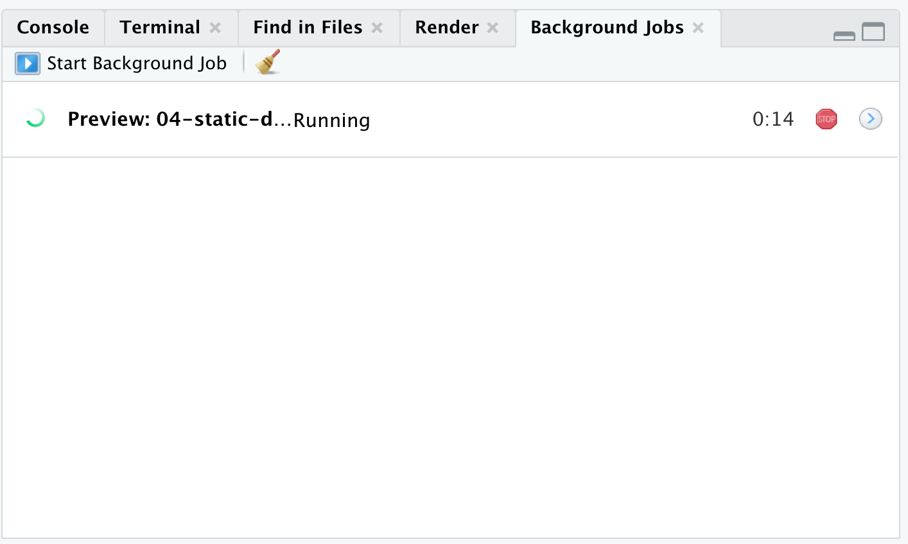
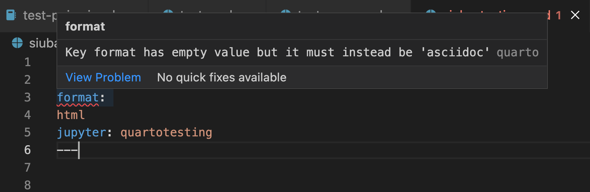
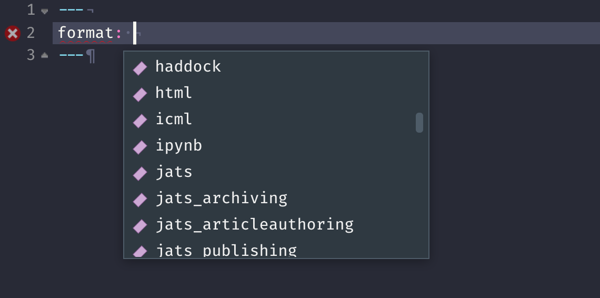

quarto render document.qmd # defaults to html
quarto render document.qmd --to pdf
quarto render document.qmd --to docx1 Metadata
Metadata: YAML
“Yet Another Markup Language” or “YAML Ain’t Markup Language”
---
key: value
---Output Options
---
format: something
------
format: html
------
format: pdf
------
format: revealjs
---Then add option arguments!
---
format:
html:
toc: true
code-fold: true
---Sub-options should be below the main format output and spacing matters!
---
format:
html:
option1: text
option2: logical
---YAML for format: html
YAML is sensitive
---
format:html # invalid, no space between
---
---
format: # invalid, read as missing
html
---
---
format:
html: # valid but needs next object
---Valid YAML can look a bit differently based on what all is needed
format: html # valid - there's a space
format:
html # valid - there's 2x spaces on a new line and no trailing :
# valid - format = HTML with selections made
format:
html:
toc: trueWhy YAML?
To avoid manually typing out all the options, every time!
quarto render document.qmd --to htmlquarto render document.qmd --to html -M code fold:truequarto render document.qmd --to html -M code-fold:true -P alpha:0.2 -P ratio:0.3Demo: Navigating within RStudio
Quarto workflow
Executing the Quarto Render button in RStudio will call Quarto render in a background job - this will prevent Quarto rendering from cluttering up the R console, and gives you and easy way to stop.

Rendering
- Render in RStudio, starts a background job and previews the output

- System shell via
quarto render
- Renders via terminal
- R console via
quartoR package
library(quarto)
quarto_render("document.qmd") # defaults to html
quarto_render("document.qmd", output_format = "pdf")Our Turn
- Open RStudio and
materials/workshop/visual-editor.qmd - Compare behavior of rendering from RStudio > Render, using the CLI with
quarto render, and in R console viaquarto::quarto_render()
Quarto linting
Lint, or a linter, is a static code analysis tool used to flag programming errors, bugs, stylistic errors and suspicious constructs. - Lint


Quarto YAML Intelligence
RStudio + VSCode provide rich tab-completion - start a word and tab to complete, or Ctrl + space to see all available options.

Our turn
- Open a new Quarto document in RStudio
- Try
Ctrl + spaceto see the available YAML options - Try out the tab-completion of any options you remember
HTML options
quarto.org/docs/reference/formats/html
You can use the HTML reference if needed.
Text & Markdown
Lists
| Markdown Syntax | Output |
|---|---|
|
|
|
|
|
|
|
continues after
|
|
|
Text Formatting
| Markdown Syntax | Output |
|---|---|
|
italics and bold |
|
superscript2 / subscript2 |
|
|
|
verbatim code |
Headings
| Markdown Syntax | Output |
|---|---|
|
Header 1 |
|
Header 2 |
|
Header 3 |
|
Header 4 |
|
Header 5 |
|
Header 6 |
Links
- There are several types of “links” or hyperlinks.
Markdown
You can embed [named hyperlinks](https://quarto.org/),
direct urls like <https://quarto.org/>, and links to
[other places](#quarto-anatomy) in
the document. The syntax is similar for embedding an
inline image: {fig-alt="A boston terrier's dressed up like a victorian gentleman"}.Output
You can embed named hyperlinks, direct urls like https://quarto.org/, and links to other places in the document. The syntax is similar for embedding an inline image:
Tables
| Right | Left | Default | Center |
|------:|:-----|---------|:------:|
| 12 | 12 | 12 | 12 |
| 123 | 123 | 123 | 123 |
| 1 | 1 | 1 | 1 || Right | Left | Default | Center |
|---|---|---|---|
| 12 | 12 | 12 | 12 |
| 123 | 123 | 123 | 123 |
| 1 | 1 | 1 | 1 |
Tables from code
knitr itself can turn R dataframes into tables with knitr::kable()
A very simple table generator, and it is simple by design. It is not intended to replace any other R packages for making tables. . . .
head(mtcars) |>
knitr::kable()| mpg | cyl | disp | hp | drat | wt | qsec | vs | am | gear | carb | |
|---|---|---|---|---|---|---|---|---|---|---|---|
| Mazda RX4 | 21.0 | 6 | 160 | 110 | 3.90 | 2.620 | 16.46 | 0 | 1 | 4 | 4 |
| Mazda RX4 Wag | 21.0 | 6 | 160 | 110 | 3.90 | 2.875 | 17.02 | 0 | 1 | 4 | 4 |
| Datsun 710 | 22.8 | 4 | 108 | 93 | 3.85 | 2.320 | 18.61 | 1 | 1 | 4 | 1 |
| Hornet 4 Drive | 21.4 | 6 | 258 | 110 | 3.08 | 3.215 | 19.44 | 1 | 0 | 3 | 1 |
| Hornet Sportabout | 18.7 | 8 | 360 | 175 | 3.15 | 3.440 | 17.02 | 0 | 0 | 3 | 2 |
| Valiant | 18.1 | 6 | 225 | 105 | 2.76 | 3.460 | 20.22 | 1 | 0 | 3 | 1 |
Quotes
Let us change our traditional attitude to the construction of programs: Instead of imagining that our main task is to instruct a computer what to do, let us concentrate rather on explaining to human beings what we want a computer to do. - Donald Knuth, Literate Programming 1
> Let us change our traditional attitude to the construction of programs: Instead of imagining that our main task is to instruct a computer what to do, let us concentrate rather on explaining to human beings what we want a computer to do. - Donald Knuth, Literate ProgrammingI like dogs
And I like cats
> I like dogs
> And I like catsCode
Anatomy of a code chunk
```{r}
#| label: car-stuff
#| echo: false
mtcars %>%
distinct(cyl)
```- Has 3x backticks on each end
```
- Indicate engine (
r) between curly braces{r}
- Place options underneath, behind the
#|(hashpipe):#| option1: value
Divs and Spans
Pandoc and therefore Quarto can parse “fenced Div blocks”
::: {.border}
This content can be styled with a border
:::This content can be styled with a border
This is text with [special]{style="color:red;"} formatting.This is text with special formatting.
You’re not limited to HTML/CSS concepts - Pandoc and Quarto also have “attributes” that can be assigned in this way.
Divs and Spans
- You can think of a
:::div as a HTML<div>but it can also apply in specific situations to content in PDF - Similarly,
[text]{.class}spans can be thought of a<span .class>Text</span>but again are a bit more transferable if using Pandoc/Quarto native attributes.
The following, if specifying a Quarto class can often apply between formats.
::: {.unnumbered .unlisted}
Text
:::While the following is hard-coded as HTML.
<div style="font-size: 200px;">Text</div>Callout Blocks
:::{.callout-note}
Note that there are five types of callouts, including:
`note`, `tip`, `warning`, `caution`, and `important`.
:::
Note
Note that there are five types of callouts, including: note, tip, warning, caution, and important.
Warning
Callouts provide a simple way to attract attention, for example, to this warning.
This is important
Danger, callouts will really improve your writing.
Tip with caption
Caution, under construction
Here is something under construction
Callout markdown syntax
:::{.callout-note}
Note that there are five types of callouts, including:
`note`, `warning`, `important`, `tip`, and `caution`.
:::
:::{.callout-tip}
## Tip With Caption
This is an example of a callout with a caption.
:::
:::{.callout-caution collapse="true"}
## Expand To Learn About Collapse
This is an example of a 'folded' caution callout that can be expanded by the user. You can use `collapse="true"` to collapse it by default or `collapse="false"` to make a collapsible callout that is expanded by default.
:::Our turn
- Open
materials/workshop/02-authoring/callout-boxes.qmd - Try changing the types of callouts/remove them from code boxes and then render
- Open
materials/workshop/02-authoring/callout-pdf.qmdand render it as well
Figures
Basic markdown syntax:
Figures w/ code
```{r}
#| fig-width: 4
#| fig-align: right
knitr::include_graphics("images/howard-gentleman.jpeg")
```Fragments/spans
{fig-align="left"}{fig-align="right" fig-alt="A photo a Boston Terrier."}Subfigures fenced div class
::: {#fig-bostons layout-ncol=2}
{#fig-boston width="250px"}
{#fig-sleep width="250px"}
Two states of Howard
:::Subfigures
Subfigures
Subfigures
::: {#fig-bostons layout-nrow=2}
{#fig-boston width="250px"}
{#fig-sleep width="250px"}
{#fig-boston width="250px"}
{#fig-sleep width="250px"}
:::Subfigures
Two states of Howard, twice
Subfigures
::: {layout-ncol="2"}
{width="250px"}
{width="250px"}
{width="250px"}
{width="250px"}
Two states of Howard, twice
:::Two states of Howard, twice
Diagrams w/ mermaid
flowchart LR
A[Hard edge] --> B(Round edge)
B --> C{Decision}
C --> D[Result one]
C --> E[Result two]
flowchart LR
A[Hard edge] --> B(Round edge)
B --> C{Decision}
C --> D[Result one]
C --> E[Result two]
Footnotes
“Literate Programming”, The Computer Journal 27 (1984), p. 97. (Reprinted in Literate Programming, 1992, p. 99.) Literate Programming (1984)↩︎